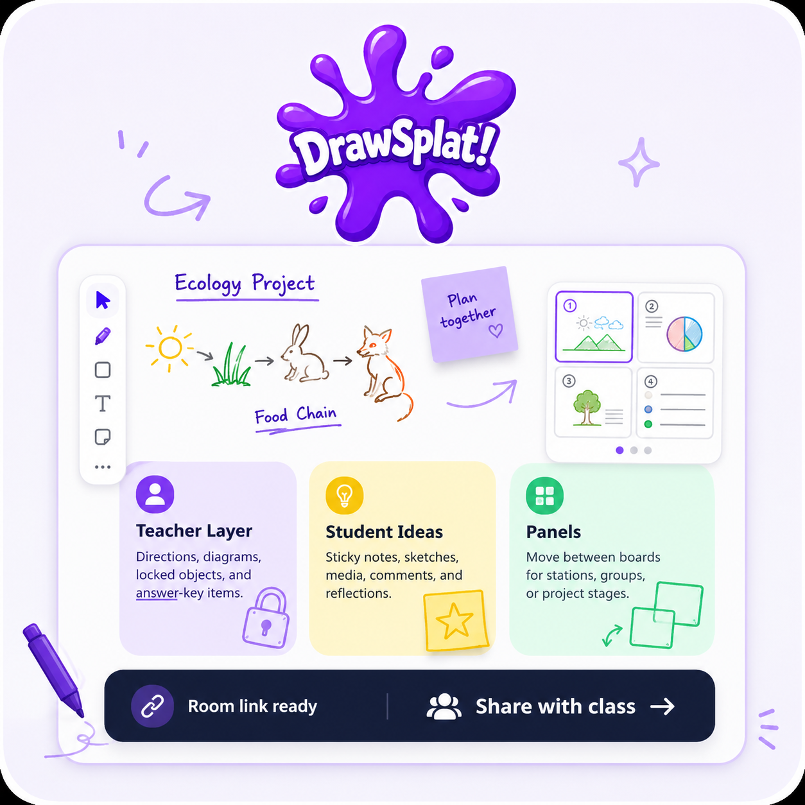
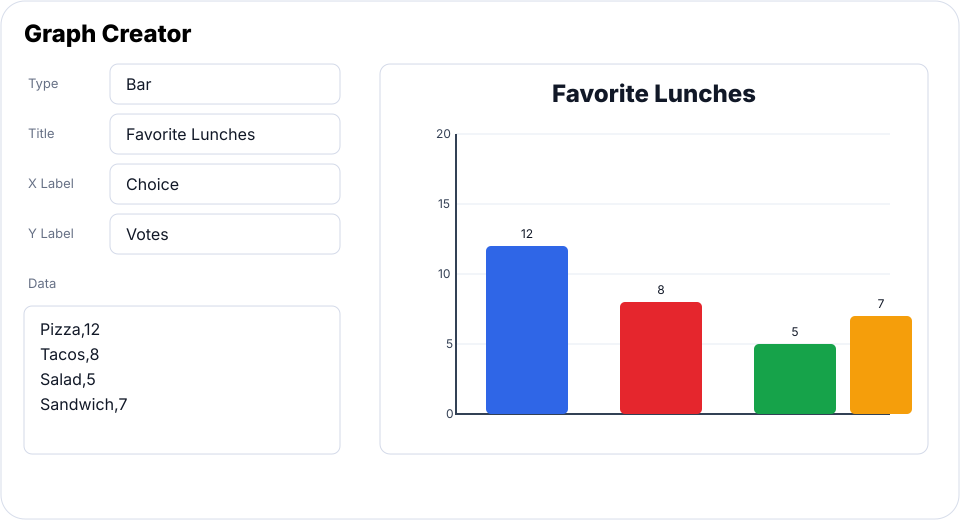
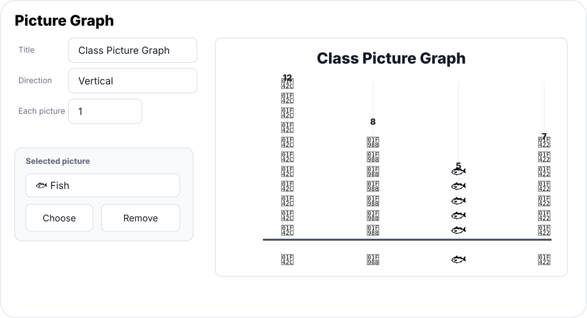
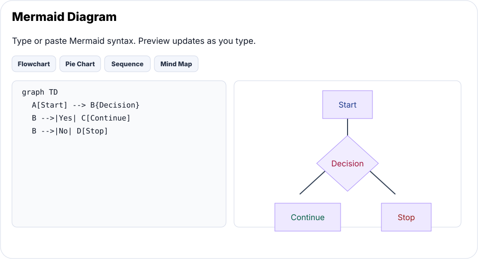
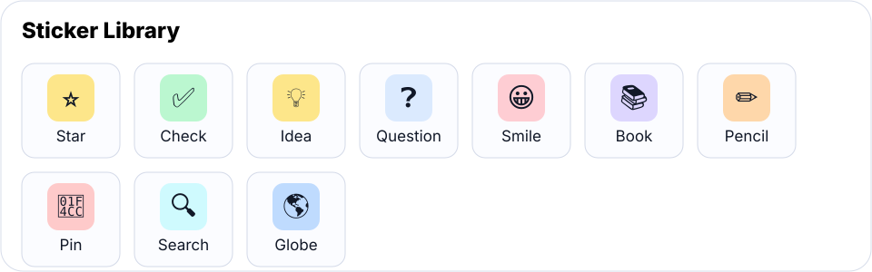
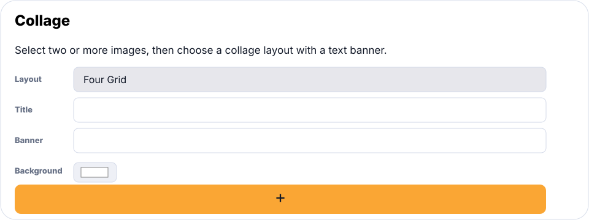

Drawing and Annotation
Use pen, shapes, arrows, text, sticky notes, selection tools, image crop, and object styling for live visual thinking.
Static-first whiteboard for learning, planning, and visual work
DrawSplatTM is a self-contained interactive whiteboard for K-16 educators and students. It runs in the browser, supports classroom and productivity workflows, and can optionally save boards, templates, collaboration rooms, and turn-ins to Google Drive and Google Sheets.

DrawSplatTM interface entry pages are available where possible in English, Spanish, Vietnamese, Arabic, Chinese, and Urdu/Hindi.
Feature Set
DrawSplatTM combines everyday whiteboard tools with classroom controls, media support, and flexible save options.
Use pen, shapes, arrows, text, sticky notes, selection tools, image crop, and object styling for live visual thinking.
Organize lessons, stations, brainstorming rounds, or project phases across multiple board panels.
Reveal class, student, assignment, answer-key, moderation, and turn-in tools only when they are needed.
Add images, audio notes, emojis, GIFs, mosaics, collages, word clouds, concept maps, Mermaid diagrams, and picture graphs.
Create bar, line, area, pie, and picture graphs. Picture graphs can use per-category images, including locally bundled Smithsonian Open Access animal photos.
Autosave locally, use Google Apps Script with Drive and Sheets, or prepare for a MySQL or standalone storage backend.
Use Dot Pictures, Dot Paint, editable concept maps, classroom background templates, grouped shapes, alignment tools, duplication shortcuts, and resizable inserted content.
Use reset controls or browser-session expiration to clear temporary work after a set window, such as 24 hours.
Tool Previews
DrawSplatTM includes graphing, picture-first graphing, diagrams, dot pictures, stickers, and collage tools inside the whiteboard.

Create bar, line, area, and pie charts from simple classroom data.

Use pictures to build and count graph categories visually.

Turn diagram syntax into editable whiteboard images.

Place structured dot art and paint dots for pattern work.

Add quick visual markers for feedback, prompts, and grouping.

Combine selected images into a single visual with labels and banners.
Choose Your Path
Students get the whiteboard. Teachers and facilitators get setup, share links, and storage controls.
Draw, add content, interact with panels, and work in the room or assignment configured by the teacher.
Teachers and facilitators Open Teacher AdminConfigure Google, choose storage behavior, test the backend, create share links, and keep settings off the student screen.
Single users and small teams Use Productivity ModeWork without classroom-specific controls for planning, diagrams, notes, facilitation, and shared visual work.
Storage Choices
Saves boards, rooms, templates, and turn-ins through Google Drive and Sheets. This is the current cloud-backed classroom path.
Keeps autosave in the browser and expires it after the selected time. It works now, but it is local to each browser profile.
Planned self-hosted option for schools that want SQL-backed rooms, users, submissions, and session expiration while keeping Google Apps available.
Requires a small backend API because static pages cannot write files into a server folder. The admin UI is ready for that future endpoint.
Community
Trade lesson ideas, share tools and workflows, talk shop with administrators, and drop suggestions in the box. Sign in with your Google or Microsoft account — no passwords to remember.